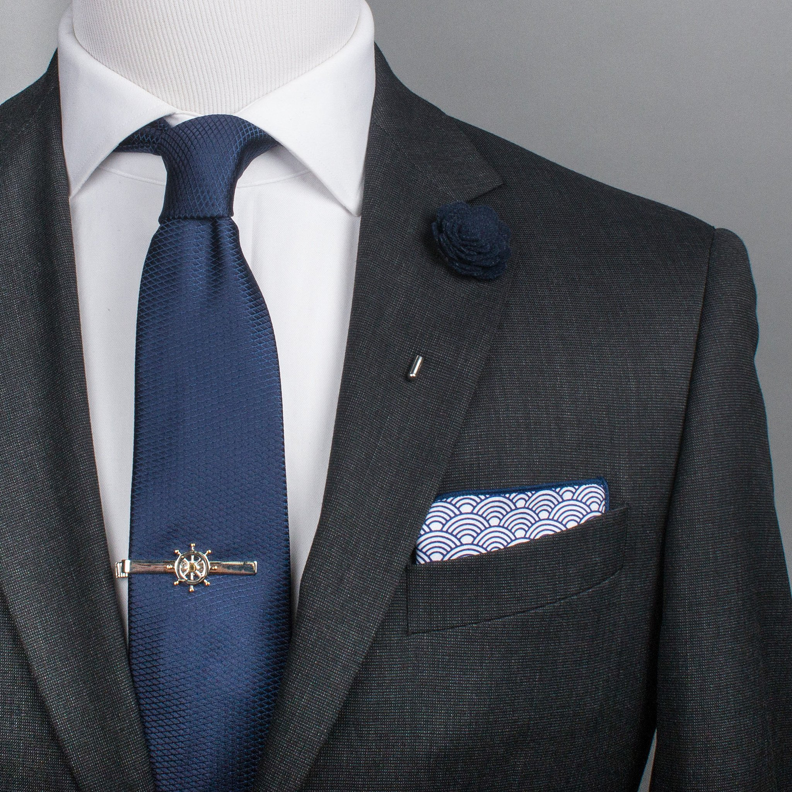
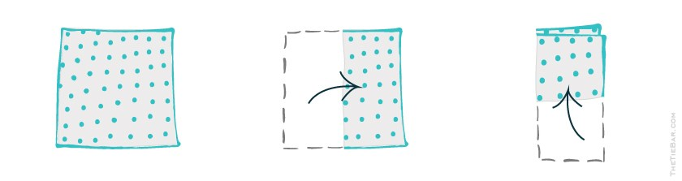

<!DOCTYPE html>
<html lang="en-US" dir="ltr">
  <head>
    <meta charset="utf-8">
    <meta name="viewport"
    content="width=device-width,intial-scale=1.0">
    <meta name="description"
    content="...">
    <meta name="author">
    <content="Sean Robinson">
  <title> Assignment 08 </title>
  <style>
  body {
        background-color: powderblue;
        text-align: left;
      }
      nav {
        background-color: white;
        text-align: center;
      }

      a {
        padding: 5px;
      }
  </style>

  <head>
    </head>

    <body>

      </body>
        <nav>
        <a href="./index.html">Home</a>
        <a href="./about.html">About</a>
        <a href="./contact.html">Contact</a>
        </nav>

        <div id="main">
          <h1> My Website </h1>
          <h2>Materials</h2>
          <ul>
            <li> Silk </li>
            <li> Cotton </li>
            <li> Linen </li>
            <li> Wool </li>
          </ul>
          
          

          <h1>Directions</h1>
          <ol>
            <li>Lay the pocket square on a flat surface.</li>
            <li>Fold in half vertically.</li>
            <li>Fold the two lower corners up so they hit just below the top edges, then flip over and tuck into your jacket pocket (adjusting the width until it fits).</li>
            

            <div class="container">
              <h1>How To Video </h1>
              <iframe width="560" height="315" src="https://www.youtube.com/embed/G_6xGw5xdnU" frameborder="0" allow="accelerometer; autoplay; encrypted-media; gyroscope; picture-in-picture" allowfullscreen></iframe>
            </div>

    </html>
